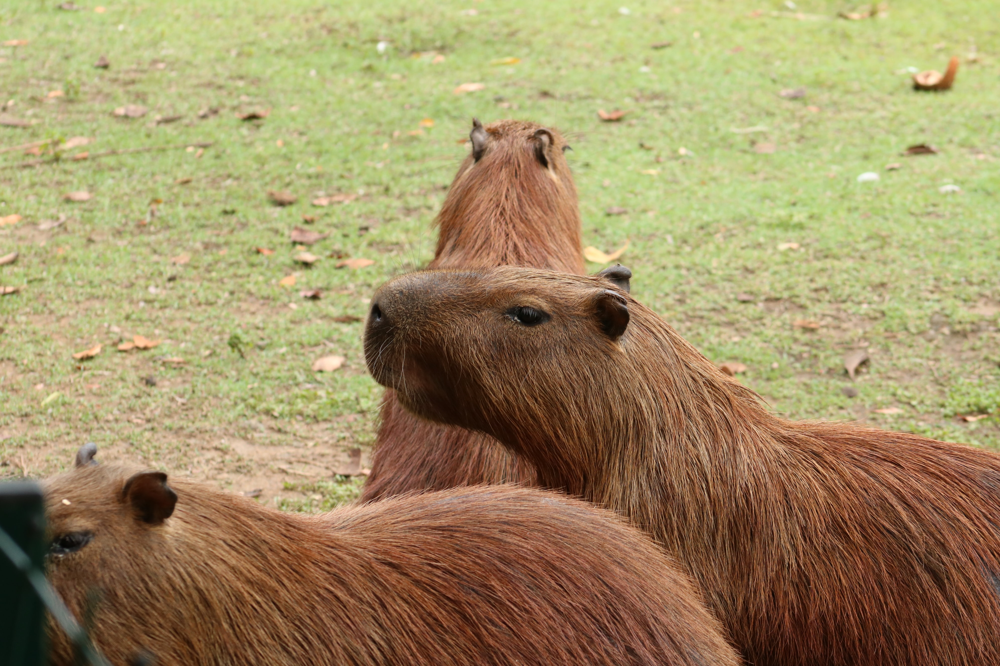

Capybaras are dependent on habitat near a water source. Because of their dry skin, they need access to a swimming hole to stay healthy; their webbed feet help them paddle. Like rhinos, their eyes, ears, and nostrils are located near the top of their head so they can keep a watchful eye on their surroundings while partially underwater. They can submerge themselves for as long as five minutes at a time to hide from predators.


Sounds

Video

Images
"Adopt"

At WWF